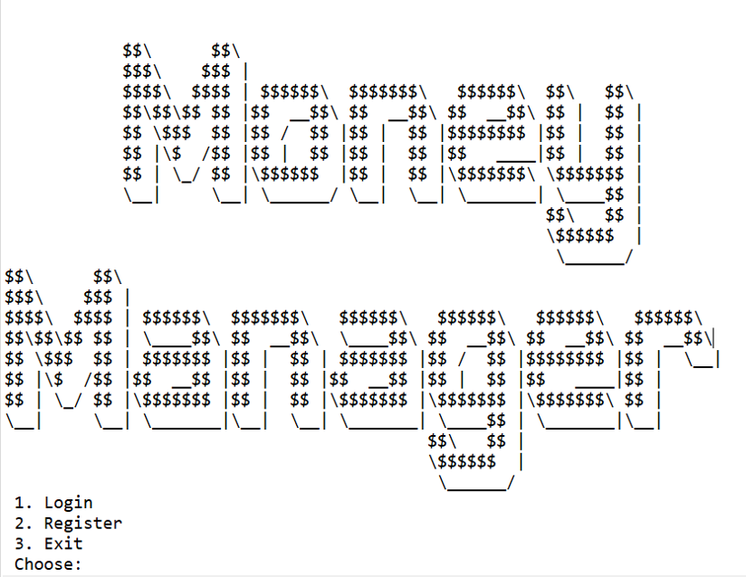
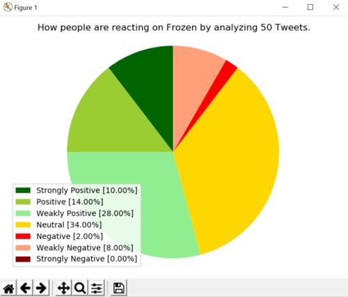

My University Projects
I am a strong believer that we can achieve great things when we are working together rather than working alone. A lot of my university subjects required group projects as the final assignment/exam. Here are some of my favorite ones!

Group Final Project
Object Oriented Programming
Money Manager
My group and I made a game called 'Money Manager' which used Java as the programming language. The game's objective is to find ways to earn money by investing or buying things that are available in the game. The users can save the game and resume it when they want to play.

PKM Karsa Cipta
Artificial Intelligence
Twitter Sentiment Analyzer
My group and I made a sentiment analyzer for processing Twitter data to gain insight on people's opinion about a certain movie.
We used python as the programming language with the help of tweepy API, textblob and matplotlib library. Users can enter the keyword or title of the movies they want to look for and the program will return the sentiment and polarity of the movies based on recent tweets of the movie.
Read the documentation here!